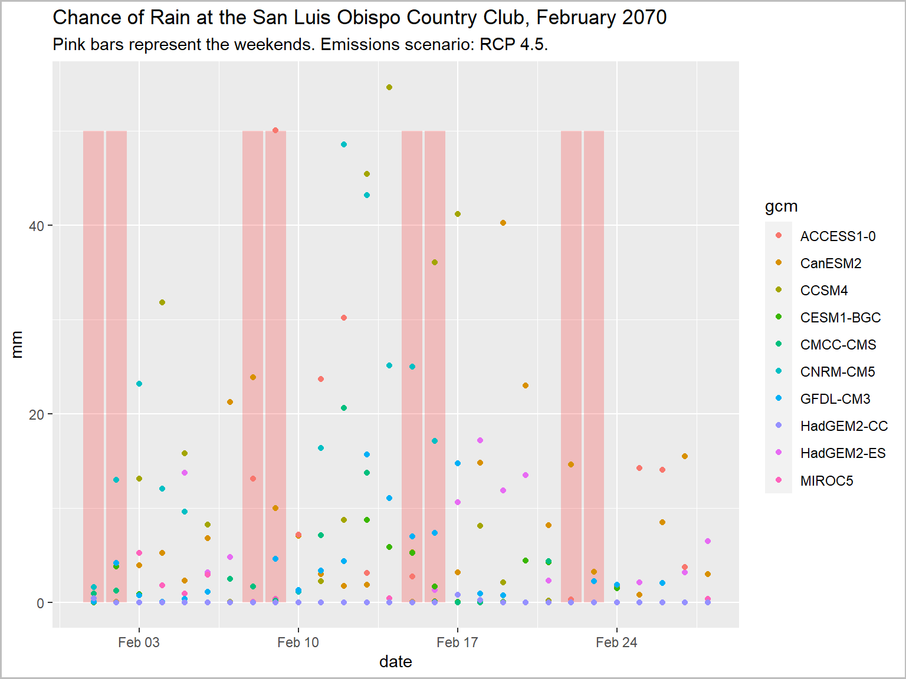
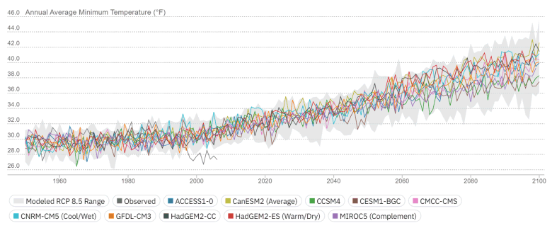
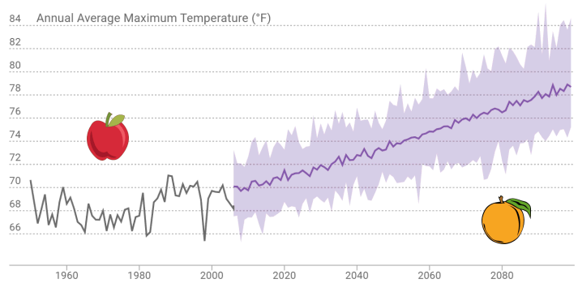
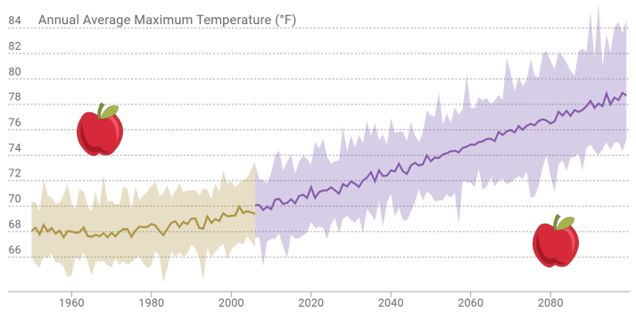

Working with Cal-Adapt Climate Data in R:
Finding Data and Best Practices for Analyzing Climate Data

caladaptR comes with a copy of the Cal-Adapt raster series “data catalog”
For each raster series you can see the:
The catalog can be retrieved using ca_catalog_rs() (returns a tibble).
PRO TIP
The best way to browse the catalog is with RStudio’s View pane. You can then use the filter buttons to find the raster series you want.
ca_catalog_rs() %>% View()
To search the catalog using a keyword, you can use ca_catalog_rs()
## 'data.frame': 94 obs. of 13 variables:
## $ slug : chr "snowfall_day_livneh_vic" "snowfall_month_ACCESS1-0_historical" "snowfall_month_ACCESS1-0_rcp45" "snowfall_month_ACCESS1-0_rcp85" ...
## $ name : chr "Livneh VIC daily snowfall" "LOCA VIC monthly snowfall for ACCESS1-0 and modeled historical" "LOCA VIC monthly snowfall for ACCESS1-0 and RCP 4.5" "LOCA VIC monthly snowfall for ACCESS1-0 and RCP 8.5" ...
## $ url : chr "https://api.cal-adapt.org/api/series/snowfall_day_livneh_vic/" "https://api.cal-adapt.org/api/series/snowfall_month_ACCESS1-0_historical/" "https://api.cal-adapt.org/api/series/snowfall_month_ACCESS1-0_rcp45/" "https://api.cal-adapt.org/api/series/snowfall_month_ACCESS1-0_rcp85/" ...
## $ tres : chr "daily" "monthly" "monthly" "monthly" ...
## $ begin : chr "1950-01-01T00:00:00Z" "1950-01-01T00:00:00Z" "2006-01-01T00:00:00Z" "2006-01-01T00:00:00Z" ...
## $ end : chr "2013-12-31T00:00:00Z" "2005-12-31T00:00:00Z" "2099-12-31T00:00:00Z" "2099-12-31T00:00:00Z" ...
## $ units : chr "mm/day" "mm/day" "mm/day" "mm/day" ...
## $ num_rast: int 1 672 1128 1128 672 1128 1128 672 1128 1128 ...
## $ id : int 519 520 521 522 523 524 525 526 527 528 ...
## $ xmin : num -125 -125 -125 -125 -125 ...
## $ xmax : num -113 -113 -113 -113 -113 ...
## $ ymin : num 31.6 31.6 31.6 31.6 31.6 ...
## $ ymax : num 43.8 43.8 43.8 43.8 43.8 ...
To see the properties of a specific dataset (e.g., to see the dates, or units), you can search on the slug:
##
## snowfall_day_livneh_vic## name: Livneh VIC daily snowfall## url: https://api.cal-adapt.org/api/series/snowfall_day_livneh_vic/## tres: daily## begin: 1950-01-01T00:00:00Z## end: 2013-12-31T00:00:00Z## units: mm/day## num_rast: 1## id: 519## xmin: -124.5625## xmax: -113.375## ymin: 31.5625## ymax: 43.75
Is this a wise or unwise use of climate data?

library(caladaptr)
library(dplyr)
library(ggplot2)
library(units)
slo_cap <- ca_loc_pt(coords = c(-120.6276, 35.2130)) %>%
ca_cvar("pr") %>%
ca_gcm(gcms[1:10]) %>%
ca_scenario("rcp45") %>%
ca_period("day") %>%
ca_dates(start = "2070-02-01", end = "2070-02-28")
slo_mmday_tbl <- slo_cap %>%
ca_getvals_tbl(quiet = TRUE) %>%
mutate(pr_mmday = set_units(as.numeric(val) * 86400, mm/day))
feb2070_weekends_df <- data.frame(dt = as.Date("2070-02-01") + c(0,1,7,8,14,15,21,22), y = 50)
ggplot(data = slo_mmday_tbl, aes(x = as.Date(dt), y = as.numeric(pr_mmday))) +
geom_col(data = feb2070_weekends_df, aes(x = dt, y = y), fill = "red", alpha = 0.2) +
geom_point(aes(color=gcm)) +
labs(title = "Chance of Rain at the San Luis Obispo Country Club, February 2070",
subtitle = "Pink bars represent the weekends. Emissions scenario: RCP 4.5.",
x = "date", y = "mm") +
theme(plot.caption = element_text(hjust = 0))
Climate models are designed to capture trends in climate.
By definition, climate is weather averaged over 30+ years.
⇒ If you’re not averaging at least 20-30 years of data, you’re probably doing something wrong.
There is variability among models.
The biggest source of uncertainty (by far) is the future of emissions.
Both are important.
Variability can be within and/or between models.

Where can I go right now to see the climate that my city will face in 50 years?
What is the appropriate historic baseline for modeled future climate scenarios?
Observed historic record and modeled future - different animals

Model historic climate and modeled future - comparable

How do we make sense of multiple climate futures?
How do we store data for multiple futures?
Individual time series are not that helpful by themselves.
What is the right order of operations for computing metrics, aggregating data, and doing comparisons?
Source Data (example):
That’s 365 * 30 * 10 * 3 = 328,500 values of tasmax, for each pixel in the county!
In what order should we
| Operation | Example | R functions |
|
Madera County, Census tracts, etc. | build into API request |
|
2070-2099 | build into API request |
|
Sep - June |
dplyr::filter()
|
|
water year |
dplyr::group_by()
|
|
‘extreme heat’ day |
dplyr::mutate()
|
|
heat spell = extreme heat for at least 3 days |
rle()
|
|
total # heat spells per water year |
dplyr::summarise()
|
|
avg # heat spells per GCM |
dplyr::summarise()
|
|
avg # heat spells per emissions scenario |
dplyr::summarise()
|
|
compare across scenarios, locations |
Cal-Adapt data always comes down in a “long” format:
ca_loc_pt(coords = c(-117.0, 33.1)) %>%
ca_cvar(c("tasmax", "tasmin")) %>%
ca_gcm(gcms[1:4]) %>%
ca_scenario(scenarios[1:2]) %>%
ca_period("year") %>%
ca_years(start = 2040, end = 2060) %>%
ca_getvals_tbl(quiet = TRUE) %>%
head()
To make useful plots, maps, and summaries, you often have to ‘munge’ or ‘wrangle’ the data, which may include:
Fortunately you have a very robust toolbox:
|
[cheatsheet] |
 [cheatsheet] |
 [cheatsheet] |
[cheatsheet] |
PRO TIP
Qtn. How do I know what data wrangling is needed?
Ans. Work backward from your analysis or visualization functions.
In Notebook 2, you will: